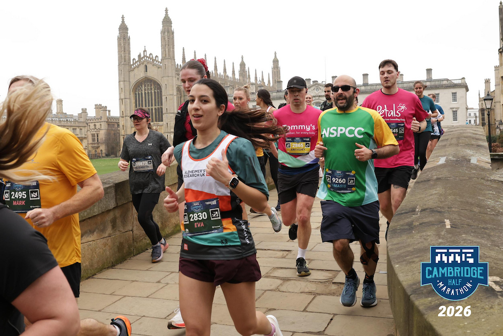

Cambridge Half Marathon 2026
Fundraised approximately £700 for Alzheimer’s Research UK through participation in the Cambridge Half Marathon 2026.
I am Evangelia (Eva) Deliporanidou, a PhD candidate in Astrophysics at the University of Cambridge. My work focuses on modelling solar and stellar irradiance with statistical methods, machine learning, and physically informed models.
I enjoy connecting scientific rigor with computational efficiency, especially when building models that are interpretable, uncertainty-aware, and predictive under complex conditions.
I am also highly interested in quantitative finance, especially where statistical learning, risk modelling, and decision-making under uncertainty intersect with real-world markets.

University of Cambridge · PhD in Astrophysics (Oct 2023 - Present)
University College London · MSc in Astrophysics (Sept 2022 - Sept 2023)
Department of Physics and Astronomy PGT SSCC (Postgraduate Academic Representative / Student Staff Consultative Committees).
Modules: Galaxies Dynamics, Formation and Evolution; Physics of Stars; Mathematics for General Relativity; Cosmology; Advanced Physics Cosmology; Solar Physics; Climate and Energy; Research Essay (15,000 words); Research Project (40,000 words).
Research Project Topic: Towards a 3D Map of the Dust in the Nuclear Stellar Disk of the Milky Way. Combined infrared observations and statistical modelling to reconstruct the three-dimensional dust distribution within the Galactic Centre, improving our understanding of the Milky Way’s central structure. Supervised by Dr JasonSanders.
University of Strathclyde · BSc (1st Class Hons) Physics (Sept 2019 - Sept 2022)
Modules: Quantum Mechanics and Electromagnetism (70%); Theoretical Physics (79%); Computational Physics (89%); Experimental Physics (88%); Astronomy (77%); Mathematical Physics (70%); Mechanics and Waves (70%); Gases, Liquids and Thermodynamics (78%); Communicating Physics (75%); Condensed Matter Physics (76%); Nanoscience (82%); Atomic, Molecular and Nuclear Physics (76%); Topics in Physics (Astrophysics and Plasma Physics, 78%).
Final Year Project: Atomic Processes for Astrophysical Plasmas (79%) - Quadrupole l-changing collisions. Supervised by Prof. Nigel Badnell. Investigated quantum mechanical atomic collision processes governing hydrogen- and helium-like ions, improving theoretical models of astrophysical plasma emission.
Fellow of the Royal Astronomical Society (RAS).
Member of the Cambridge University Algorithmic Trading Society.
Member of the Cambridge University Astronomical Society.

Fundraised approximately £700 for Alzheimer’s Research UK through participation in the Cambridge Half Marathon 2026.